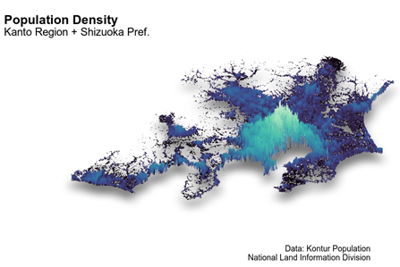

S
HINICHIRO
I
WATA
: 岩田真一郎
Home
|
Research
|
Tutorial
|
Notes
|
都市経済学講義ノート
目的
：都市政策・都市経済学（
神奈川大学経済学部
）の講義内容を補完するためのノート
対象
：大学生，
ゼミナール生
講義ノート
住宅価格と住宅政策
［
PDF形式
：1027KB］
住宅ストックとフロー
［
PDF形式
：468KB］
住宅価格の推定：ヘドニックモデルの理論と実証
［
PDF形式
：792KB］
交通と交通政策
［
PDF形式
：3630KB］
都市内の住宅立地
［
PDF形式
：1968KB］
ニュースの都市経済学
住宅価格と子ども数
［
PDF形式
：268KB］
地方自治体間の子ども医療費助成競争
［
PDF形式
：288KB］
店舗立地と商品価格：都心店，準都心店，通常店
［
PDF形式
：489KB］
共同住宅とその維持管理
［
PDF形式
：321KB］
建築物の安全確保と逆選択への対応策
［
PDF形式
：829KB］

Home
>
Notes
>